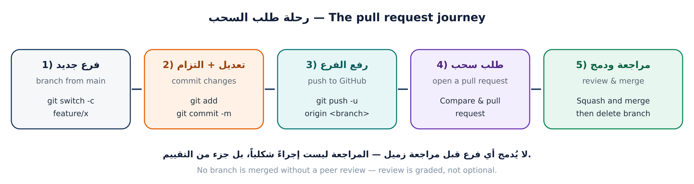
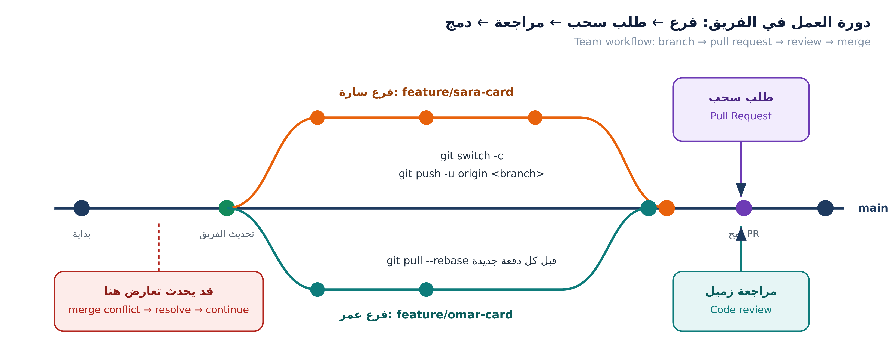

main هي النسخة التي يعتمد عليها الجميعمخالفة اليوم: الدفع المباشر إلى main. حماية الفرع سترفضه، وستخصم درجات التقييم — لأن المراجعة مهارة مقصودة هنا لا إجراء شكلي.


$ git switch main && git pull --ff-only # ← لا تبدأ قبل هذه الخطوة $ git switch -c feature/<username>-card Switched to a new branch 'feature/omar-qa-card' $ git branch main * feature/omar-qa-card $ git branch --show-current feature/omar-qa-card
| ✔ اسم صحيح | ✘ اسم خطأ | السبب |
|---|---|---|
| feature/omar-qa-card | my-branch | لا يدل على صاحبه ولا موضوعه |
| docs/leen-readme-faq | test | غامض ومكرر |
| fix/sara-search-filter | sara/new/final/2 | مسارات وتسمية فوضوية |
$ cp data/members/00-template.json data/members/<username>.json
{
"fullName": "عمر القاسم",
"github": "omar-qa",
"role": "مختبر QA",
"favoriteCommand": "git log --oneline --graph --all",
"message": "أبحث عن الأخطاء قبل أن يجدها المستخدم، وأثبت كل إصلاح بمخرجات واضحة.",
"tags": ["Testing", "JavaScript"],
"joinedAt": "2026-10-06"
}
ممنوع: بريد إلكتروني، رقم هاتف، عنوان، كلمة مرور. الفحص التلقائي يرفض الملف، وقد يُطلب منك حذف الالتزام وإعادة العمل.
$ node tools/build-index.mjs [build-index] ✔ تم توليد الفهرس: 6 بطاقة. • ali-h مطوّر • nour-dev مصمّم • omar-qa مختبر QA $ node tests/validate-members.mjs === فحص بطاقات الأعضاء / Validating member cards === --- النتيجة / Result: 6 بطاقة، 0 خطأ، 0 تحذير ---
إن ظهر خطأ: اقرأ أول سطر خطأ فقط، أصلحه، ثم أعد التشغيل. لا تُكمل قبل أن تصبح النتيجة 0 خطأ.
$ git status -sb ## feature/omar-qa-card M data/members-bundle.js M data/members-index.json ?? data/members/omar-qa.json $ git add data/members/omar-qa.json data/members-index.json data/members-bundle.js $ git commit -m "feat(members): add card for omar-qa" [feature/omar-qa-card 89f5cff] feat(members): add card for omar-qa 3 files changed, 25 insertions(+), 2 deletions(-)
| ✔ رسالة مقبولة | ✘ رسالة مرفوضة |
|---|---|
| feat(members): add card for omar-qa | update |
| fix(ui): correct card alignment | changes |
| docs(readme): add FAQ section | final / done / asdf |
$ git push -u origin feature/omar-qa-card
remote:
remote: Create a pull request for 'feature/omar-qa-card' on GitHub by visiting:
remote: https://github.com/<org>/class-team-hub/pull/new/feature/omar-qa-card
remote:
To https://github.com/<org>/class-team-hub.git
* [new branch] feature/omar-qa-card -> feature/omar-qa-card
branch 'feature/omar-qa-card' set up to track 'origin/feature/omar-qa-card'.
-u تختصر عليك: بعدها يكفي git push وgit pull بلا أسماءfeat(members): add card for omar-qanode tests/validate-members.mjsCloses #12 ليُغلق طلبك المهمة تلقائياً عند الدمجلا تضغط Merge بنفسك. الدمج بعد موافقة المراجع — هذا هو الفرق بين «رفعت كوداً» و«عملت في فريق».
favoriteCommand لا يبدأ بـ git، هل تصححه؟»# المراجع طلب إضافة وسم JavaScript: $ nano data/members/omar-qa.json $ node tests/validate-members.mjs --- النتيجة / Result: 6 بطاقة، 0 خطأ، 0 تحذير --- $ git add data/members/omar-qa.json $ git commit -m "fix(members): add JavaScript tag per review feedback" $ git push 89f5cff..3c7d9e1 feature/omar-qa-card -> feature/omar-qa-card
لاحظ: نفس طلب السحب تحدّث تلقائياً — لا تفتح طلباً جديداً. الطلب يعرض كل ما على فرعك حتى لحظة الدمج.
| الخطأ | الحل |
|---|---|
| fatal: not a git repository | أنت خارج مجلد المشروع — افحص pwd |
| fatal: invalid reference | اسم الفرع خطأ، أو تحاول الانتقال إلى فرع غير موجود |
| ! [rejected] non-fast-forward | فرعك قديم: git pull --rebase ثم push |
| nothing to commit | نسيت git add قبل الالتزام |
| لم يظهر الرابط على GitHub | نسيت git push أو أخطأت اسم الفرع |
سؤال للتفكير: زر الدمج على GitHub فيه ثلاثة خيارات (Merge / Squash / Rebase). أيّها تختار ولماذا؟ ستجيب عملياً في الجلسة القادمة.